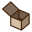
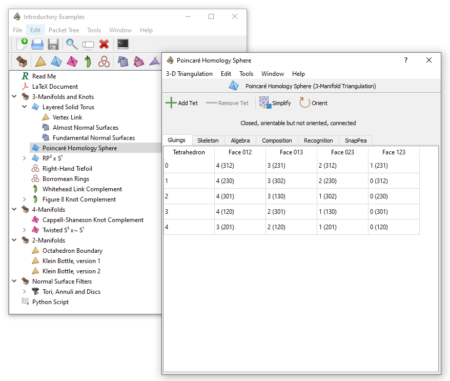
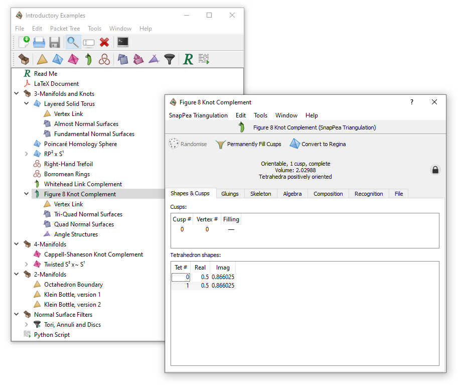
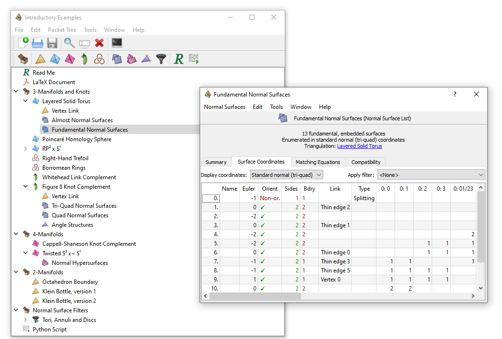
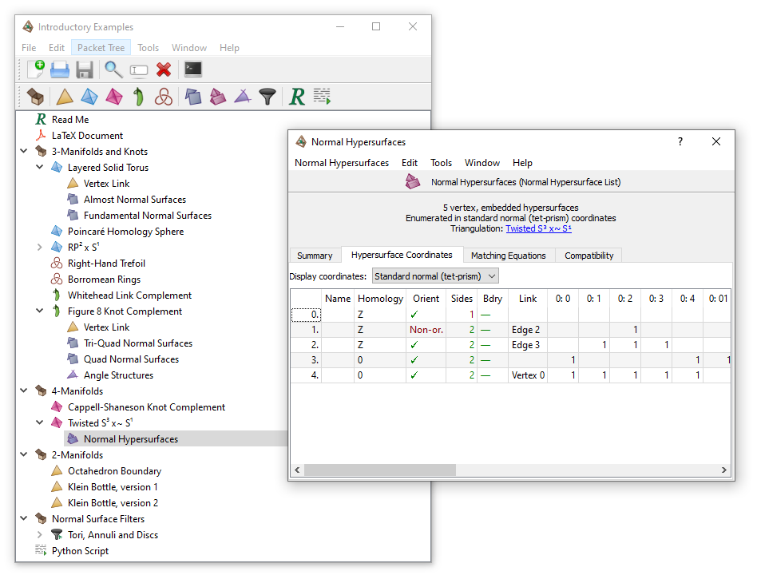
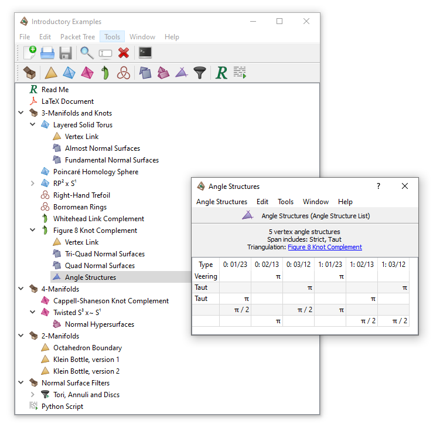
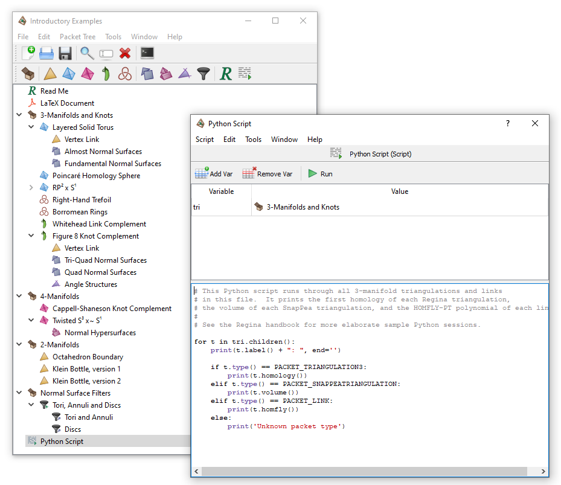

Different Packet Types | |
| Prev | Working with Packets | Next |
There are many different types of packet that you can create in Regina. Here we give a brief overview of each.
A container packet helps keep your packet tree organised: it can contain other “child” packets, but otherwise it does nothing.
Containers are marked by the following icon: 
To see how containers can be used to organise a tree, take a look at one of the census files: try →→. Part of the packet tree for this census is shown below (the container labelled 6 tetrahedra has been opened for viewing).
Tip
Any packet (not just a container) can contain other child packets.
A 2-manifold triangulation packet describes a triangulated 2-manifold, formed by gluing edges of triangles together in pairs.
2-manifold triangulations are marked by the following icon:
A 3-manifold triangulation packet describes a triangulated 3-manifold, formed by gluing faces of tetrahedra together in pairs. 3-manifold triangulations are central to Regina, and you can learn more about using them by reading the triangulations chapter in this handbook.
3-manifold triangulations are marked by the following icon:

A SnapPea triangulation packet stores a 3-manifold using SnapPea's internal data structures (in contrast, the usual 3-manifold triangulation packet uses Regina's own structures, which are independent of SnapPea). You can learn more about using SnapPea triangulations in the corresponding chapter later in this handbook.
The advantages of using a SnapPea triangulation is that it stores additional information that Regina does not (such as fillings and peripheral curves), and it offers more direct access to the SnapPea kernel. The main disadvantage is that you do not have the fine-grained control over the triangulation that Regina offers you (in particular, you cannot manipulate the triangulation as freely). Of course Regina offers you facilities to convert one into the other.
SnapPea triangulations are marked by the following icon:


A 4-manifold triangulation packet describes a triangulated 4-manifold, formed by gluing faces of pentachora (i.e., 4-simplices) together in pairs. 4-manifold triangulations were introduced in Regina 5.0, and you can learn more about them by reading the triangulations chapter in this handbook.
4-manifold triangulations are marked by the following icon:


Regina currently offers very basic support for triangulations of dimensions 5–15. At present you cannot work with these higher-dimensional triangulations in the GUI—instead you will need to use either Python scripting or C++ programming.
Triangulations of dimension 5–15 are marked by an icon similar to the following, with the dimension marked inside the simplex-shaped outline:
The packet viewer offers very little information, but it does include a button to open a Python console, where you can analyse and/or modify the triangulation further.
A link packet describes a knot or link diagram, formed from a collection of crossings and strands that connect them. Link packets were introduced in Regina 5.96, and you can learn more about them by reading the knots and links chapter in this handbook.
Knots and links are marked by the following icon:
A normal surface list represents a set of normal surfaces within a 3-manifold triangulation. Typically this will be the set of all vertex or fundamental surfaces in some normal (or almost normal) coordinate system. Like triangulations, normal surfaces are central to Regina, and you can learn more about using them in the chapter on normal surfaces and hypersurfaces.
Normal surface lists are marked by the following icon:

Normal surface lists can be created using different sets of matching equations, and can then be viewed in a variety of coordinate systems. In the packet tree, a normal surface list must always appear as a child of the corresponding 3-manifold triangulation.

A normal hypersurface list represents a set of normal hypersurfaces within a 4-manifold triangulation. As with normal surface lists, this will typically be the set of all vertex or fundamental hypersurfaces in some normal coordinate system. You can learn more about them in the chapter on normal surfaces and hypersurfaces.
Normal hypersurface lists are marked by the following icon:
At present, normal hypersurface lists can only be created in the standard coordinate system (with 15 coordinates per pentachoron). However, you can still view the hypersurfaces in a variety of different coordinate systems. In the packet tree, a normal hypersurface list must always appear as a child of the corresponding 4-manifold triangulation.

An angle structure list represents a set of angle structures on a 3-manifold triangulation. Typically this will be the set of all vertex angle structures under the standard equations. You can learn more about working with angle structure lists in the chapter on angle structures in this handbook.
Angle structure lists are marked by the following icon:
Like normal surface lists, an angle structure list must always appear as a child of the corresponding 3-manifold triangulation.

A surface filter can be applied to a long list of normal surfaces to extract only some smaller set of surfaces that you might be interested in. You can learn more about surface filters in the chapter on normal surfaces. Regina offers two types of surface filter:
A property filter selects only those normal surfaces with a given orientability, compactness, boundary, and/or Euler characteristic.
Property filters are marked by the following icon:
A combination filter uses boolean
AND or OR
to combine several other surface filters.
This allows you to combine property filters together in
complex boolean expressions.
Combination filters are marked by the following icon:
A combination filter will combine its immediate children in the packet tree. For example, the combination filter illustrated below will select any surface that passes either the Tori and Annuli filter or the Discs filter.
A text packet contains an arbitrary amount of plain text, with no formatting. It can be used to add descriptions, observations or other miscellaneous comments into your data file.
Text packets are marked by the following icon:
A script packet contains a Python script that offers direct access to Regina's calculation engine. You can edit the script from within Regina, and your script can set variables that represent other packets in your data file. See the chapter on Python for more information on scripting within Regina.
Script packets are marked by the following icon:

Like text packets, a PDF packet allows you to document your work. PDF packets support richer content, including diagrams and formulae. The PDF document must be created outside Regina (using LaTeX or your favourite word processor), and then imported into your Regina data file by selecting →.
PDF packets are marked by the following icon:
When you open a PDF packet for viewing, it will open in your computer's default PDF viewer (as illustrated below). If you like, you can specify a different PDF viewer in Regina's settings.
| Prev | Contents | Next |
| Working with Packets | Up | General Operations on Packets |